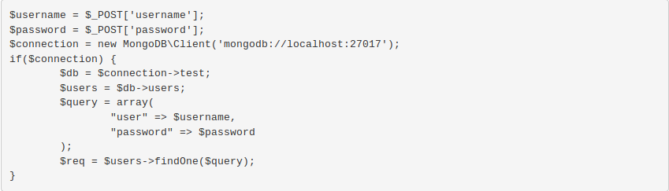
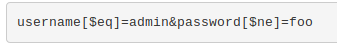

NoSQL Database is a non-relational Data Management System, that does not require a fixed schema. It avoids joins, and is easy to scale. The major purpose of using a NoSQL database is for distributed data stores with humongous data storage needs. NoSQL is used for Big data and real-time web apps. For example, companies like Twitter, Facebook and Google collect terabytes of user data every single day.
A NoSQL injection vulnerability is an error in a web application that uses a NoSQL database. This web application security issue lets a malicious party bypass authentication, extract data, modify data, or even gain complete control over the application. NoSQL injection attacks are the result of a lack of data sanitization. NoSQL injections are just one of many injection attacks, similar to traditional SQL Injections. They are engineered to exploit modern databases that do not use SQL. The term NoSQL (not only SQL) is used to describe databases that use a less rigid structure and may refer to many different types of databases, including those that use models such as key-value, key-document, column-family, or graph. While NoSQL database engines have a different structure and do not support SQL statements and SQL queries, they still let users perform queries. They do not support one standardized language and therefore the query language is dependent on the implementation: database (e.g. MongoDB, Redis, Google Cloud Datastore, etc.), language (e.g. Python, PHP, etc.), and framework (e.g. Node.js, Angular). However, NoSQL queries are most often based on JSON and they can include user input. If this input is not sanitized, they are vulnerable to injections.
To understand how a NoSQL query is constructed and how it is vulnerable to an injection attack, we will focus on the most popular NoSQL database: MongoDB, and we will access it using PHP. Here is a simple example of a code snippet that accesses a MongoDB for authentication purposes.
As you can see, in this example, username and password used for authentication are taken from a POST request and then directly used in the query. Similar to other types of injection, a malicious user may supply a NoSQL injection payload that tricks the database. To perform a successful MongoDB injection, it is enough if the attacker supplies the following malicious input data as a POST request:
The [$ne] query operator means not equal. Therefore, the resulting query will find the first record in which the username is admin and the password is not foo. If this code is used for authentication, the attacker is logged in as the admin user. More operators can be used in a similar fashion, for example [$lt] and [$gt] as well as [$regex]. Regular expressions can even allow the attacker to enumerate all users in the above scenario by trying combinations in sequence and evaluating the result.